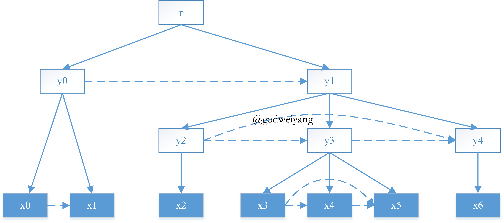
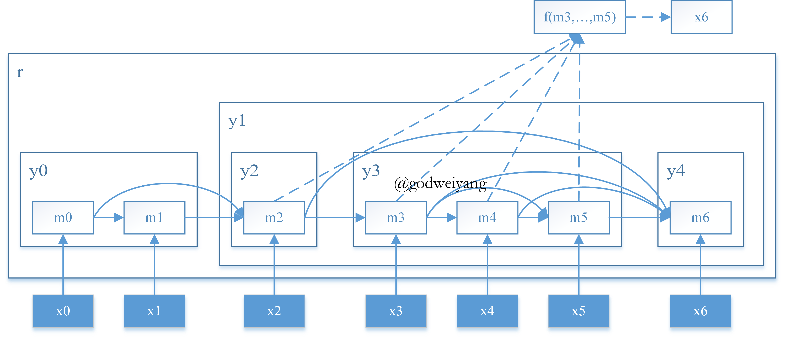
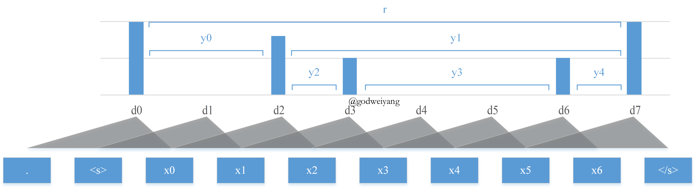
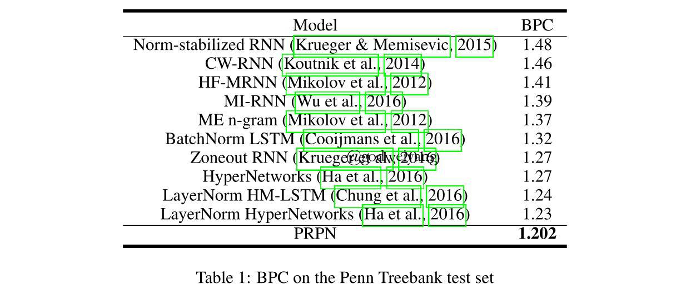
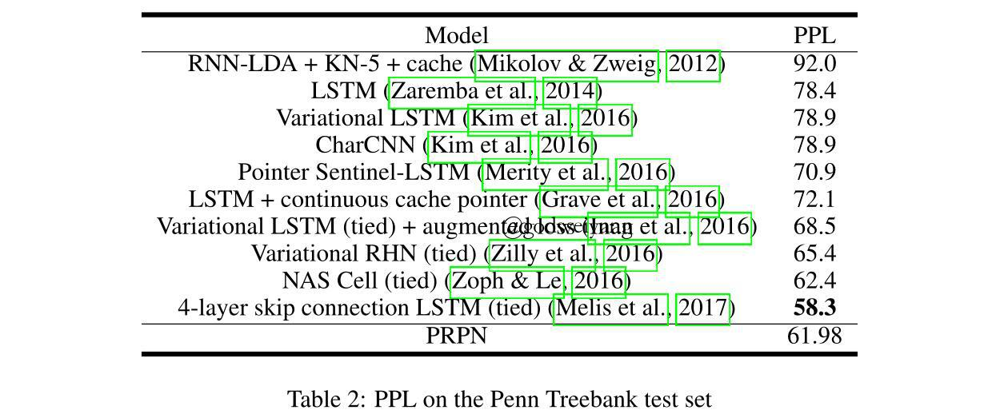
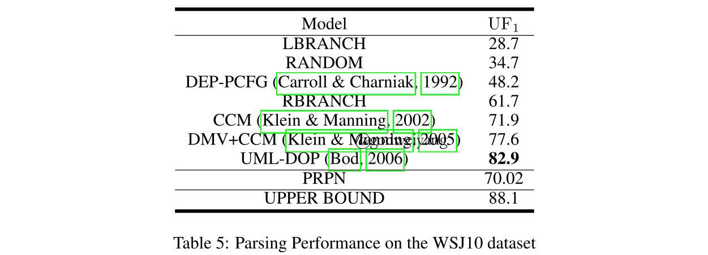

论文地址：Neural Language Modeling by Jointly Learning Syntax and Lexicon
代码地址：github
最近开始转向去看看一些无监督的成分句法分析论文，看看能否有一些启发QAQ。这篇博客摸鱼划水写了整整四天才写完，好累啊啊啊。
介绍
一般来说，自然语言是由词汇和句法组成的，但是标准的语言模型一般都只用RNN对词汇进行建模，句法信息都是隐式的学习到的，没有办法显式地拿出来使用。所以本文提出的语言模型的变体可以结合结构上的attention，在中间过程中学习到结构信息，然后这层结构信息可以拿来生成句法树，用来做无监督的句法分析。
那么为什么要做无监督的句法分析呢？主要原因还是一些小语种标注语料太少了甚至没有，不能用监督句法分析来做。而且无监督句法分析学到的信息还可以用来增强语言模型或者更为下游的任务的性能，使它们能更好的融合句法结构信息。
本文提出的模型（PRPN）主要有如下三个组成部分：
- 可微分的Parsing Network。主要用来学习句子的句法距离（syntactic distance，这个在之前的博客中有讲到，是同一个组做的工作，链接：Straight to the Tree: Constituency Parsing with Neural Syntactic Distance），然后产生出门函数（gate function），也就是句子中每个词的权重，这样跑RNN的时候就没有必要考虑之前的所有信息了，只需要考虑句法距离最近的，也就是同一个短语中的信息。这里可微分后面会详细讲到，也就是不能直接预测离散的序列，不然梯度没办法反向传播，所以预测的是一个分布。
- Reading Network。这个部分就和普通的RNN差不多，区别就是利用了上面的attention，然后每个时刻的输入不仅仅是上一个时刻的隐含层状态，还包括了历史所有相关的隐含层状态。
- Predict Network。最后预测下一个词也不是直接采用当前时刻的隐含层输出，而是采用所有attention后的历史隐含层信息。
最后模型训练好之后，用Parsing Network学习到的句法距离就可以产生出无监督的句法树，当然这里只能产生unlabeled的句法树，也就是说，无监督的成分句法分析都是只评测unlabeled F1值，因为nonterminal信息实在是无法无监督的预测出来，除非结合外部标注器或者人工制定规则？
由于我觉得这篇论文写作有点粗糙，很多地方写的很乱，甚至还有公式变量和图片不对应，所以下面的公式我有些自行修改过了，如果觉得有疑问的，可以参考原文，并且告诉我。
动机
下图是一个输入句子及其对应的句法树示例：

其中实线表示成分句法树的结构，而虚线表示同一棵子树的若干个子结点之间的联系。我们用$(x_0, x_1, \ldots, x_n)$表示输入句子，用$y_i$表示句法树中的某一个结点，用$r$表示根结点。定义$y_i$所表示的短语范围是$(l(y_i), r(y_i))$，例如在上图中$y_1$表示的范围是$(2, 6)$，所以有$l(y_1) = 2$和$r(y_1) = 6$。
下图是模型的Reading Network和Predict Network大致框架：

其中实线表示Reading Network中RNN每个时刻的输入依赖于之前的哪些时刻，虚线表示Predict Network中预测下一个词时需要考虑哪些时刻的隐含层输出(这里有个小错误，图中最上面一行函数参数从$m_3$开始，但实际上虚线表明应该从$m_2$开始)。
首先是Parsing Network。这种和之前状态的连接在这里被叫做“跨越连接”（skip connection），而具体和哪些状态连接，就要用到门$g_i^t$，表示当前处在$t$时刻，和之前的第$i$时刻有没有关联，有就是1，没有就是0。在这里先定义变量$l_t$为$x_t$和之前最远到哪个位置的单词有关联，分成两种情况：
- 如果$x_t$不是某个子树最左边的叶子结点，那么$l_t$就定义为它的父结点的最左边那个叶子结点，也就是$x_t$最左边那个兄弟结点。比如上图中的$x_4$，因为它在子树中位于中间，所以$l_4 = 3$，也就是说它最远和$x_3$有一定关联，而再往前的单词由于不在同一个短语里，关联就不大了。
- 如果$x_t$是某一个子树$y_i$最左边的子结点，那么$l_t$就定义为$y_i$最左边那个兄弟结点的最左边的叶子结点。比如上图中$l_3 = 2$，因为$x_3$是$y_3$的最左边的子结点，而$y_2$是$y_3$最左边的兄弟结点，$x_2$又是$y_2$最左边的叶子结点，也就是说$x_3$最远和之前的$x_2$有关联，它们共同组成了更大的短语$y_1$。（这里定义又不是很严谨，例如对于上面那个例子，$x_2$既是$y_1$又是$y_2$的最左子结点，这种情况下不能按照$y_2$来计算，因为它没有最左的兄弟结点！所以按照$y_1$来算的话得到$l_2 = 0$。）
根据这个$l_t$就可以将$g_i^t$定义为：
\[
g_i^t = \left\{ {\begin{array}{}{1,{l_t} \le i < t}\\{0,0 < i < {l_t}}\end{array}} \right.
\]
但是因为这是离散的决策，没法传递梯度，所以之后会介绍用概率来替代这里的0和1。
然后是Reading Network。得到了gates之后，就可以修改RNN，用下面公式计算$t$时刻的隐含层状态：
\[
m_t = h(x_t, m_0, \ldots, m_{t-1}, g_0^t, \ldots, g_{t-1}^t)
\]
具体是怎么使用这个gates的，后面再具体介绍，反正只要知道多考虑了很多个历史状态就行了，每个状态都有一个权重，表示考虑了多少。
最后就是Predict Network，用来预测下一个单词$x_{t+1}$，用到的是历史多个隐含层状态信息：
\[
p(x_{t+1} | x_0, \ldots, x_t) \approx p(x_{t+1} ; f(m_0, \ldots, m_t, g_0^{t+1}, \ldots, g_t^{t+1}))
\]
这里后面也会具体讲到。
模型
这里我不按照论文上的顺序讲，论文是倒序，变量定义都得看完整篇论文才出来，实在是看的太杂乱了。。。
Parsing Network
第1步：
首先第一步要预测出相邻两个单词的句法距离，用宽度为$L+1$的卷积核来对单词进行卷积。例如要预测$x_i$和$x_{i-1}$的句法距离，那么就对$x_{i-L}, x_{i-L+1}, \ldots, x_i$进行卷积（其实就是两层前馈神经网络），得到如下输出（注意原文中这一段里的词向量$e$应该都是$x$，有误）：
\[
\begin{array}{}{h_i = {\rm ReLU}(W_c \left[ {\begin{array}{*{20}{c}}e_{i-L}\\e_{i-L+1}\\ \cdots\\ e_i \end{array}} \right] + b_c)} \\ {d_i = {\rm ReLU}(W_dh_i+b_d)}\end{array}
\]
当然了，第二行也可以看做是窗口大小为1的卷积核，第一个单词之前要补上$L-1$个0。
最后得到的句法距离反映出了相邻两个词之间的语义相关程度，如果距离比较大，说明两个词可能位于两个不同的短语中，否则就位于同一个短语。一个形象化的句法距离就是相邻两个单词的最近公共祖先的高度。
下面这个图就是一个例子，卷积核窗口宽度为2：

第2步：
然后就可以根据句法距离，求出$x_t$最远到哪个位置有联系。用$\alpha_j^t$来衡量$x_t$与$x_j$的分别与前一个单词的句法距离的差距：
\[
\alpha_j^t = \frac{ {\rm hardtanh}((d_t - d_j) \cdot \tau) + 1}{2}
\]
这里的${\rm hardtanh}$就是当输入大于1或者小于-1时，截取掉，给它限制在-1到1这个范围内，所以最后$\alpha$的范围就是0到1。可以看出，如果$\alpha_j^t$很大，那么$d_t$就大于$d_j$，否则的话$d_t$就小于$d_j$。这也很合乎直观上的认知，如果$d_t$大于$d_j$，那么说明$x_j$和$x_{j-1}$的最近公共祖先的高度比较低，那么说明$x_j$和$x_t$在同一棵子树中，差值自然大，反之的话$x_j$是当前子树的最左边的子结点，差值就很小。
所以模型只需要一步步往左寻找第一个$\alpha_j^t$最接近0的点，也就是之前提到过的$l_t$。为了实现这个目标，可以定义$l_t = i$的概率为：
\[
p(l_t = i | x_0, \ldots, x_t) = (1 - \alpha_i^t) \prod_{j=i+1}^{t-1} {\alpha_j^t}
\]
为什么这么设计呢？其实还是很有道理的。概率越大的话，说明$\alpha_i^t$越小，而其他的$\alpha_j^t$越大，这就印证了上面提出的观点。而如果取$l_t > i$的话，$1 - \alpha_i^t$一定很小，会拉低概率；反之取$l_t < i$的话，会乘上一个很小的项$\alpha_i^t$，也会拉低概率。所以取$l_t = i$就是最优的。
第3步：
我们的最终目的是求出门$g_i^t$，也就是$x_t$与$x_i$的相关度。在之前的动机中，直接将$l_t$之后的设为1，之前的设为0，但是这样是离散序列，无法传播梯度，所以这里采用另一种方法来求。注意到只有$p(l_t = i | x_0, \ldots, x_t)$接近于1，而其他的概率都接近于0，所以只需要用概率密度函数来作为$g_i^t$就行了：
\[
g_i^t = P(l_t \le i) = \prod_{j=i+1}^{t-1} {\alpha_j^t}
\]
注意到这个概率密度函数在$i < l_t$时值基本很小接近于0，而大于等于它时很大，越来越接近于1。这和设计的初衷已经很像了，所以可以近似用来作为$g_i^t$。
这里要提几点证明，可看可不看。
证明开始
首先这个概率$p(l_t = i | x_0, \ldots, x_t)$的形式其实是一个狄利克雷过程，有两个特殊值要定义一下，一个是$l_t = t-1$时，概率为：
\[
p(l_t = t - 1 | x_0, \ldots, x_t) = (1 - \alpha_{t - 1}^t)
\]
还有就是当$l_t = 0$时，因为$d_0$实际不存在，所以定义为句法距离无穷大，那么$\alpha_0^t$定义为0，所以概率为：
\[
p(l_t = 0 | x_0, \ldots, x_t) = \prod_{j=1}^{t-1} {\alpha_j^t}
\]
然后可以求出$g_i^t$的期望（这里论文中又写的一塌糊涂，符号定义都不统一。。。）：
\[
\mathbb E(g_i^t) = \prod_{j=1}^{t-1} {\alpha_j^t} + (1 - \alpha_1^t)\prod_{j=2}^{t-1} {\alpha_j^t} + \ldots + (1 - \alpha_i^t)\prod_{j=i+1}^{t-1} {\alpha_j^t}
\]
进一步可以写为：
\[
\mathbb E(g_i^t) = \sum_{j=0}^i {p(l_t = j | x_0, \dots, x_t)} = P(l_t \le i)
\]
上面的求和裂项相消可以得到：
\[
P(l_t \le i) = \prod_{j=i+1}^{t-1} {\alpha_j^t}
\]
这里也可以验证出$P(l_t < t) = 1$，所以最终得到下面的门是正确的：
\[
g_i^t = \prod_{j=i+1}^{t-1} {\alpha_j^t}
\]
然后要证明的就是根据这个策略求出的两个单词的关联区间没有交叉（但是可以完全覆盖）。首先放宽一下条件，证明当$\alpha_j^t$只取0或者1时，性质成立，也就是定义（这里原文又打错了。。。）：
\[
\alpha_j^t = \frac{ {\rm sign}(d_t - d_j) + 1}{2}
\]
也就是在原来的定义中令$\tau$为正无穷。这样的话如果$d_t > d_j$，那么$\alpha_j^t$就是1，否则就是0。放宽了条件之后，$g_i^t$取值就只有1和0了，所以求出的$l_t$一定是满足句法距离$d_i > d_t$所有位置中最右边的一个。而对于所有的$l_t < i < t$，都满足$d_i < d_t$。证明也很简单，假设存在两个单词$x_v$和$x_n$，其中$v < n$，它俩的关联区间交叉了，那么假设$x_v$的$l_t$为$u$，而$x_n$的$l_t$为$m$，所以$u < m < v < n$。那么根据定义，有：
\[
\begin{array}{} {d_u > d_v > d_m \\ d_m > d_n > d_v} \end{array}
\]
这两个式子显然矛盾，所以证明了在宽松的条件下，这个不交叉的性质是成立的。
另一个极端是令$\tau = 0$，这种情况下$\alpha_j^t = \frac{1}{2}$，最终算下来$g_i^t$是一个首项为$\frac{1}{2^{t-1}}$公比为2的等比数列。这里的话论文里说最终会形成一棵所有叶子结点都直接连接在根结点上面的句法树，但是我是没看出来为什么，首先这种情况下句法距离$d$对最终的损失函数没有影响了，所以梯度无法传播回来，句法距离$d$应该只受到词向量影响了，最终就是一个普通的语言模型，句法距离最终会是什么样子谁也不知道。
在具体实现时，将$\tau$设为一个中间值，但是这样会产生交叉的关联区间，所以测试的时候再将其设为正无穷。
证明结束
Reading Network
上面的Parsing Network求了半天就是为了得到这个gates $g_j^t$，然后怎么使用呢？既然是语言模型，下面当然要用LSTM来对句子进行编码了。众所周知，在LSTM中有两个隐含层状态$h$和$c$，所以在这里不直接使用上一个时刻传过来的状态，而是用历史所有时刻的状态信息，再与gates加权后输入到下一时刻。在论文中并没有直接使用gates作为权重，而是计算了一个新的权重，这里称作结构化attention：
\[
\begin{array}{} {k_t = W_h h_{t-1} + W_x x_t \\ \tilde s_i^t = {\rm softmax}(\frac{h_i k_t^{T}}{\sqrt {\delta_k}})} \end{array}
\]
当然这还不是最终的权重，再通过加入gates，定义一个新的结构化intra-attention：
\[
s_i^t = \frac{g_i^t \tilde s_i^t}{\sum_i g_i^t}
\]
上面两个式子我也不是很清楚怎么解释，反正最后就用这个权重来对历史状态进行编码：
\[
\left[ \begin{array}{*{c}}{\tilde h_t \\ \tilde c_t}\end{array} \right] = \sum_{i=1}^{t-1} {s_i^t \cdot m_i} = \sum_{i=1}^{t-1} {s_i^t \cdot \left[ \begin{array}{*{c}}{h_i \\ c_i}\end{array} \right]}
\]
最后将加权求和后的隐含层状态作为下一个时刻的隐含层输入，得到新的隐含层表示。
Predict Network
最后就是预测下一个单词是什么了，这里并没有直接用下一时刻$t + 1$的隐含层输出来预测，还是采用了attention，但是存在一个问题，$g_j^{t+1}$的值依赖于$d_{t+1}$，也就是依赖于$x_{t+1}$，但是这是我们需要预测的，那怎么办呢？论文中就直接用另一套参数直接预测出一个临时的$d_{t+1}’$：
\[
d_{t+1}’ = {\rm ReLU}(W_d’h_t + b_d’)
\]
最后对历史状态加权求和，然后用一个前馈神经网络预测下一个单词：
\[
f(m_0, \ldots, m_t, g_0^{t+1}, \ldots, g_t^{t+1}) = \hat f([h_{l:t-1}, h_t])
\]
实验
具体实验设置啥的去看论文吧，这里就贴几个结果图解释一下。

上面这个是字符级别的语言模型的结果，PRPN取得了SOTA的结果。

上面这个是词级别的语言模型的结果，除了那个用了4层LSTM和跨越连接的模型（参数多）外，PRPN效果是最好的。
当然我最关心的还是无监督成分句法分析上面的结果：

目前为止，无监督成分句法分析的标准做法还是用WSJ10数据集（也就是长度小于等于10的句子），然后用unlabeled F1评测。可以看到，PRPN效果只能说一般般，不是很好。
其实我也很疑惑，这里的无监督句法分析全靠Parsing Network产生的句法距离来产生，但是一个关键问题是句法距离并没有监督，唯一的监督信号来自于最后Predict Network的语言模型，那么这个句法距离真的能够学习到真实的句法距离吗？我比较怀疑，不过效果证明，这个对语言模型还是有帮助的，对无监督成分句法分析的话不好说。
总结
这篇论文几个review都给出了还算不错的评价，思想是不错的，但是和其中一个review观点一样，我觉得文章写得太烂了，一堆的笔误，逻辑很混乱，即使这已经是review后修改过的版本了，还是有一堆错误。
过两天再看一篇ICLR2019的还是这个组的PRPN的改进版本，看看到底有何改进。不过真要搞无监督句法分析的话，还是老老实实去做聚类吧。